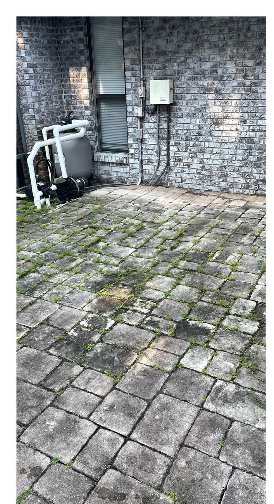
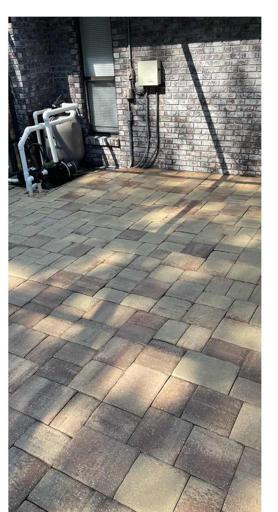
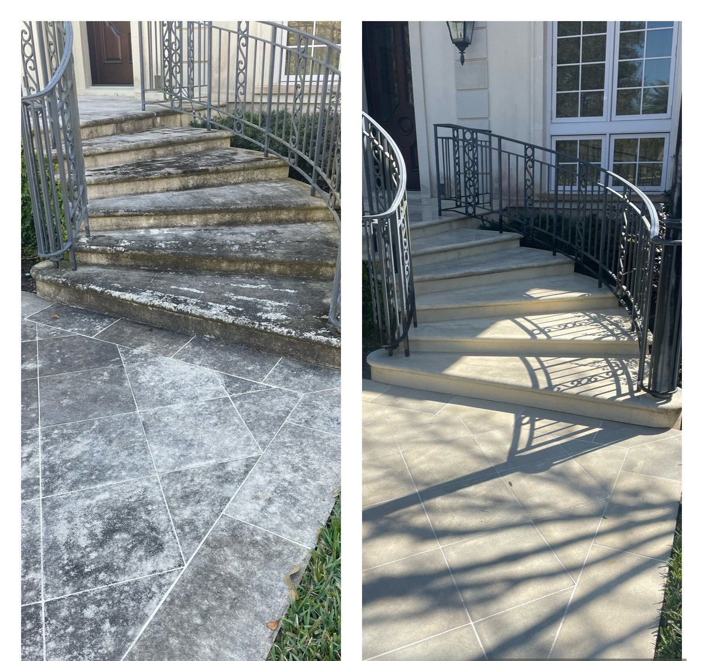
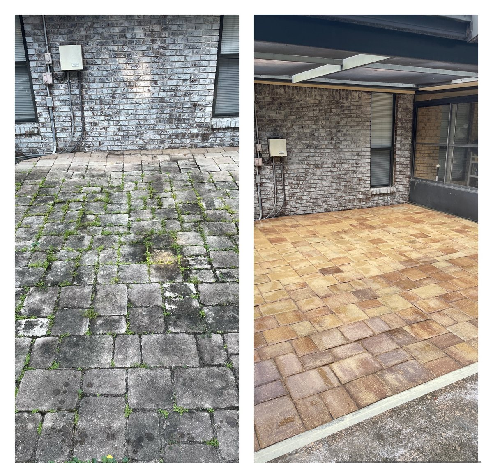
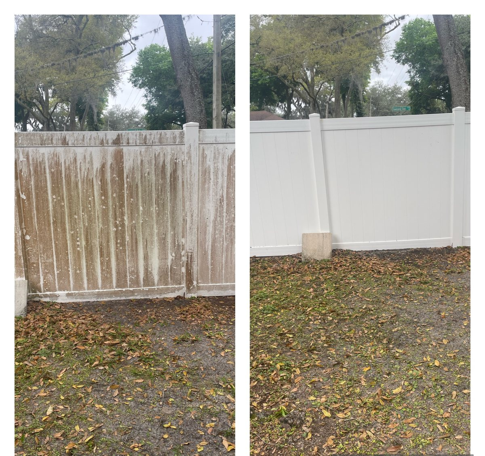
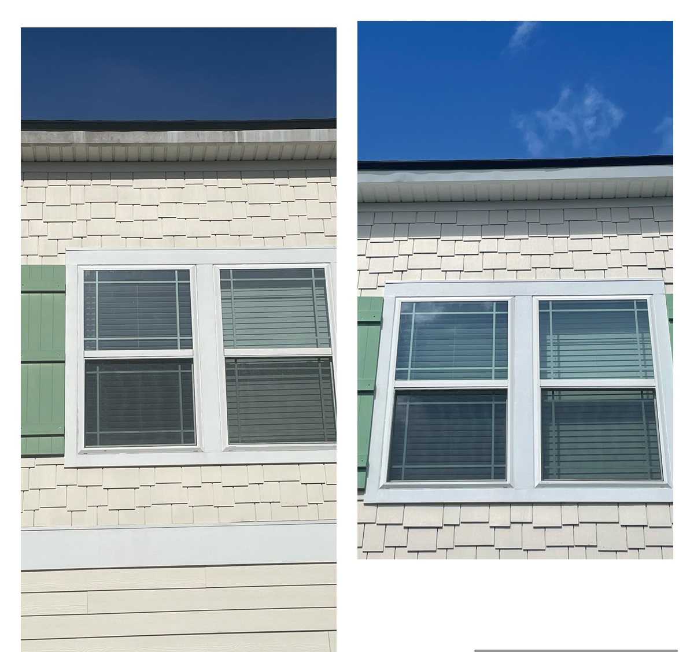
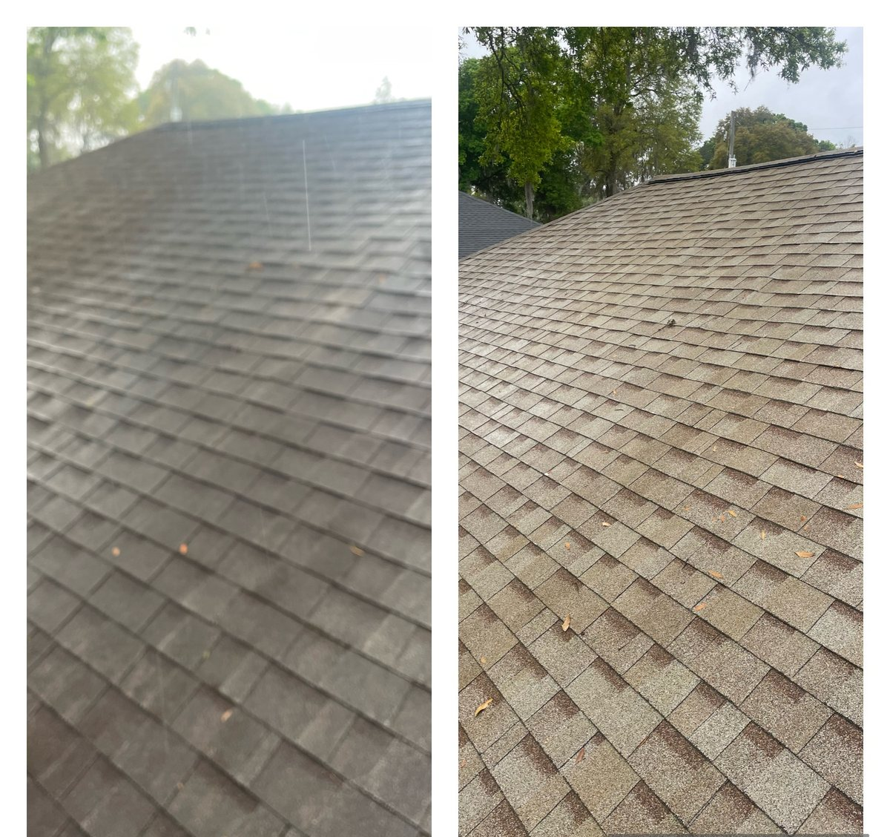
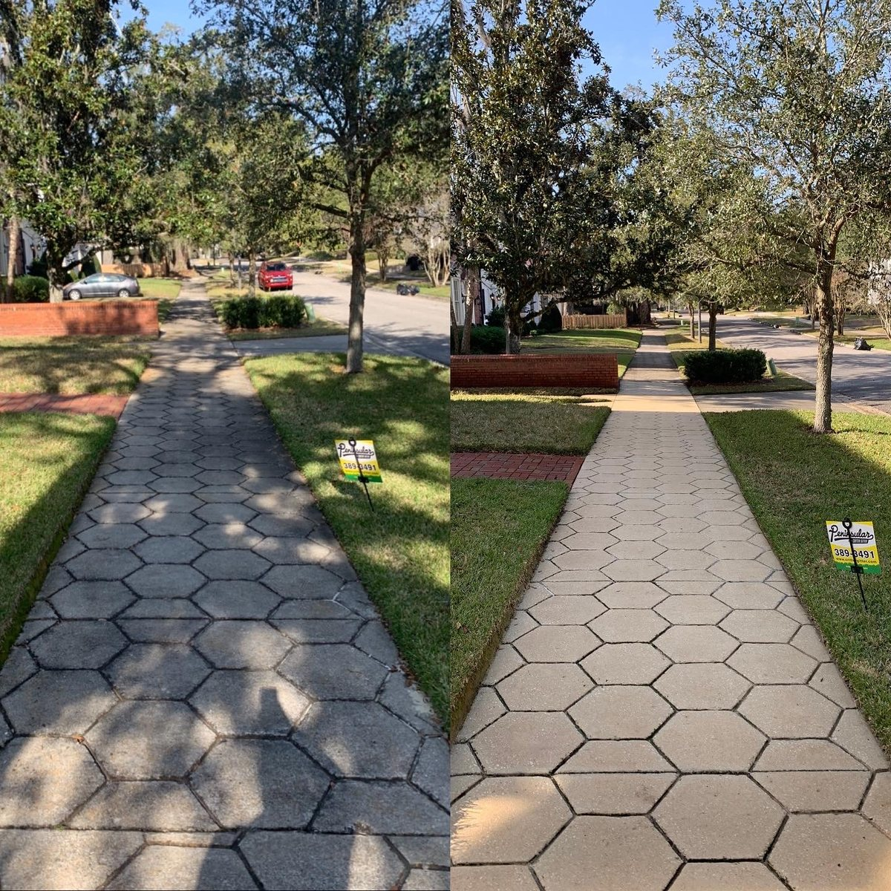

House Soft Washing
Low-pressure siding washes for algae, mildew, pollen, and everyday buildup.

Licensed and insured exterior cleaning
Soft-wash house cleaning, concrete brightening, and detail-minded surface care for Jacksonville homes, businesses, and managed properties.
Built for homeowners, property managers, and small businesses across Jacksonville, Beaches, Mandarin, Ponte Vedra, Fleming Island, Orange Park, Julington Creek, St. Johns, Nocatee, and surrounding communities that want exterior cleaning handled carefully.
Start a quote requestServices
Pressure is only part of the job. The right detergents, nozzles, dwell time, and rinse pattern protect paint, siding, wood, concrete, and landscaping.
Low-pressure siding washes for algae, mildew, pollen, and everyday buildup.
Surface-cleaned concrete, brick, and pavers with an even, consistent finish.
Wood and composite cleaning that removes grime without cutting into the grain.
Brightening for exterior gutter faces, soffits, trim, and drip-line staining.
Entryways, sidewalks, dumpster pads, awnings, and exterior customer areas.
Recurring cleanups for spring pollen, fall grime, listing prep, and events.
Results
Real job photos show the difference on concrete, pavers, siding, fences, steps, and roof surfaces. The same process starts with careful prep before any rinse.








Reviews
Google is the source of truth for public customer reviews. Open the JaxWorks listing to read recent feedback or leave a review after service.
Opens the JaxWorks LLC Google listing by business name and phone number.
Read Google ReviewsIf Google shows more than one result, choose JaxWorks LLC.
Process
Share a few exterior photos and the surfaces you want cleaned.
Receive a written estimate with prep notes, timing, and service options.
The crew checks water access, outlets, plants, doors, and fragile fixtures.
Walk the property together before the job is closed out.
Free quote
A quick quote request gives the crew enough detail to confirm service fit, estimate timing, and ask for photos if needed.
FAQ
Siding usually gets soft washed instead of blasted. The cleaning solution does the work, then the surface is rinsed with low pressure.
Not always. The crew needs access to the areas being cleaned, an exterior water source, and any gate or parking instructions.
Most homes benefit from annual or every-other-year service depending on shade, trees, humidity, and road dust.
Organic growth usually responds well. Rust, oil, battery acid, oxidation, and old paint can need specialty treatment and may not disappear completely.